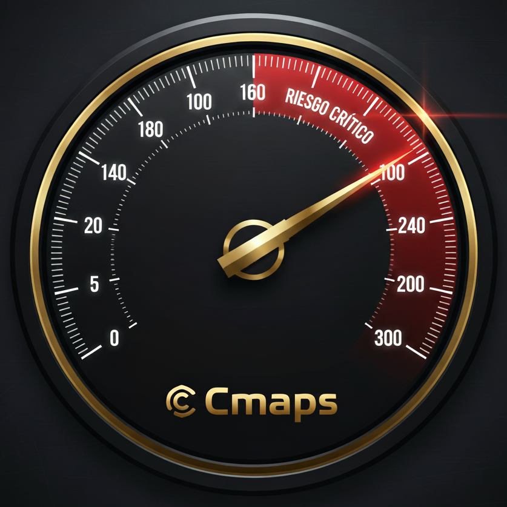

Score 0-300 (IRSO): Cuantificando el Riesgo para la Alta Dirección
El Score de Riesgo Socio-Operativo (IRSO) es la métrica derivada que permite a la dirección estratégica **cuantificar el riesgo de parálisis y conflicto** en el corto plazo, garantizando la continuidad operativa y calculando el Retorno de Inversión (ROI) en estabilidad.
"La única plataforma que unifica la solidez científica del Motor Electoral Histórico con la evaluación de riesgo social inmediato."
Mitigación de Riesgo Sistémico
Propuesta de Valor Unificada CMAPS
1. Fundamento: Análisis Histórico de Voto Duro
La base de la solidez científica. Acceda a la granularidad del voto duro por sección, crucial para entender la lealtad política y la estabilidad estructural de su territorio.
Muestra: Geometrías de Iztacalco y Nezahualcóyotl con datos de votos por partido.
2. Motor: Inteligencia Táctica y Optimización Logística
Visualice el mapa de Incidencia Delictiva (Agosto 2025). CMAPS integra variables complejas de riesgo social inmediato para optimizar recursos y proteger operaciones en campo.
Muestra: Geometrías de Edomex y CDMX con total de delitos reportados.
Inteligencia Precisa para la Micro-Operación en Campo
CMAPS y el Score 0-300 entregan órdenes de operación geo-referenciadas. Desde el coordinador de brigada hasta el activista: cada persona en campo maximiza su eficiencia y seguridad con datos de primer nivel.
Asignación Óptima
Dirija personal de forma segura usando el Score 0-300 para evitar zonas de alta conflictividad y riesgo.
Metas Claras
Establezca objetivos de proselitismo por sección basados en el porcentaje real de voto duro a consolidar.
Visión Granular
Acceda a la información a nivel de sección electoral, la unidad mínima requerida para la micro-operación eficaz.